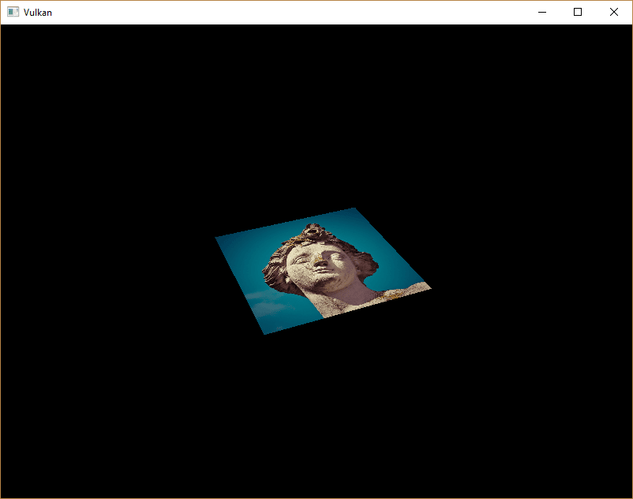
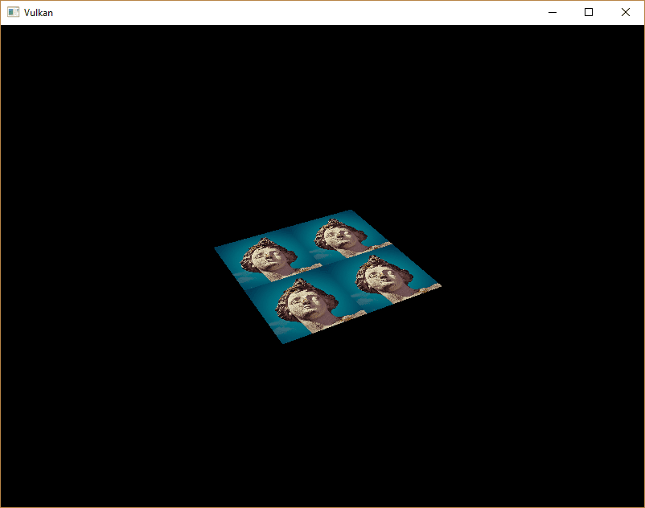
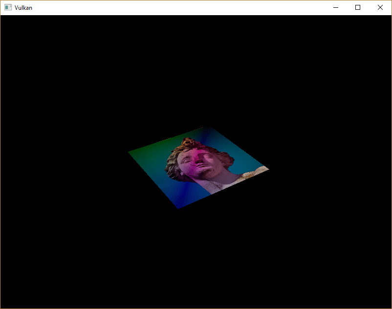

Combined image sampler
Introduction
We looked at descriptors for the first time in the uniform buffers part of the tutorial. In this chapter, we will look at a new type of descriptor: combined image sampler. This descriptor makes it possible for shaders to access an image resource through a sampler object like the one we created in the previous chapter.
It’s worth noting that Vulkan provides flexibility in how textures are accessed in shaders through different descriptor types. While we’ll be using a combined image sampler in this tutorial, Vulkan also supports separate descriptors for samplers (vk::DescriptorType::eSampler) and sampled images (vk::DescriptorType::eSampledImage). Using separate descriptors allows you to reuse the same sampler with multiple images or access the same image with different sampling parameters. This can be more efficient in scenarios where you have many textures that use identical sampling configurations. However, the combined image sampler is often more convenient and can offer better performance on some hardware due to optimized cache usage.
We’ll start by modifying the descriptor set layout, descriptor pool and descriptor set to include such a combined image sampler descriptor.
After that, we’re going to add texture coordinates to Vertex, replacing the color value, and modify the fragment shader to read colors from the texture instead of just interpolating the vertex colors.
Updating the descriptors
Browse to the createDescriptorSetLayout function and add a VkDescriptorSetLayoutBinding for a combined image sampler descriptor.
We’ll simply put it in the binding after the uniform buffer:
std::array<vk::DescriptorSetLayoutBinding, 2> bindings{
{{.binding = 0, .descriptorType = vk::DescriptorType::eUniformBuffer, .descriptorCount = 1, .stageFlags = vk::ShaderStageFlagBits::eVertex},
{.binding = 1, .descriptorType = vk::DescriptorType::eCombinedImageSampler, .descriptorCount = 1, .stageFlags = vk::ShaderStageFlagBits::eFragment}}};
vk::DescriptorSetLayoutCreateInfo layoutInfo{.bindingCount = static_cast<uint32_t>(bindings.size()), .pBindings = bindings.data()};Make sure to set the stageFlags to indicate that we intend to use the combined image sampler descriptor in the fragment shader.
That’s where the color of the fragment is going to be determined.
It is possible to use texture sampling in the vertex shader, for example to dynamically deform a grid of vertices by a heightmap.
We must also create a larger descriptor pool to make room for the allocation of the combined image sampler by adding another vk::PoolSize of type vk::DescriptorType::eCombinedImageSampler to the vk::DescriptorPoolCreateInfo.
Go to the createDescriptorPool function and modify it to include a vk::DescriptorPoolSize for this descriptor:
std::array<vk::DescriptorPoolSize, 2> poolSize{{{.type = vk::DescriptorType::eUniformBuffer, .descriptorCount = MAX_FRAMES_IN_FLIGHT},
{.type = vk::DescriptorType::eCombinedImageSampler, .descriptorCount = MAX_FRAMES_IN_FLIGHT}}};
vk::DescriptorPoolCreateInfo poolInfo{.flags = vk::DescriptorPoolCreateFlagBits::eFreeDescriptorSet,
.maxSets = MAX_FRAMES_IN_FLIGHT,
.poolSizeCount = static_cast<uint32_t>(poolSize.size()),
.pPoolSizes = poolSize.data()};Inadequate descriptor pools are a good example of a problem that the validation layers will not catch: As of Vulkan 1.1, vk::raii::Device::allocateDescriptorSets may fail and throw a vk::OutOfPoolMemoryError exception if the pool is not sufficiently large, but the driver may also try to solve the problem internally.
This means that sometimes (depending on hardware, pool size and allocation size) the driver will let us get away with an allocation that exceeds the limits of our descriptor pool.
Other times, vk::raii::Device::allocateDescriptorSets will fail and throw a vk::OutOfPoolMemoryError exception.
This can be particularly frustrating if the allocation succeeds on some machines, but fails on others.
Since Vulkan shifts the responsibility for the allocation to the driver, it is no longer a strict requirement to only allocate as many descriptors of a certain type (vk::DescriptorType::eCombinedImageSampler, etc.) as specified by the corresponding descriptorCount members for the creation of the descriptor pool.
However, it remains best practice to do so, and in the future, VK_LAYER_KHRONOS_validation will warn about this type of problem if you enable Best Practice Validation.
The final step is to bind the actual image and sampler resources to the descriptors in the descriptor set.
Go to the createDescriptorSets function.
for (size_t i = 0; i < MAX_FRAMES_IN_FLIGHT; i++)
{
vk::DescriptorBufferInfo bufferInfo{.buffer = uniformBuffers[i], .offset = 0, .range = sizeof(UniformBufferObject)};
vk::DescriptorImageInfo imageInfo{.sampler = textureSampler, .imageView = textureImageView, .imageLayout = vk::ImageLayout::eShaderReadOnlyOptimal};
...
}The resources for a combined image sampler structure must be specified in a vk::DescriptorImageInfo struct, just like the buffer resource for a uniform buffer descriptor is specified in a vk::DescriptorBufferInfo struct.
This is where the objects from the previous chapter come together.
std::array<vk::WriteDescriptorSet, 2> descriptorWrites{{{.dstSet = descriptorSets[i],
.dstBinding = 0,
.dstArrayElement = 0,
.descriptorCount = 1,
.descriptorType = vk::DescriptorType::eUniformBuffer,
.pBufferInfo = &bufferInfo},
{.dstSet = descriptorSets[i],
.dstBinding = 1,
.dstArrayElement = 0,
.descriptorCount = 1,
.descriptorType = vk::DescriptorType::eCombinedImageSampler,
.pImageInfo = &imageInfo}}};
device.updateDescriptorSets(descriptorWrites, {});The descriptors must be updated with this image info, just like the buffer.
This time we’re using the pImageInfo array instead of pBufferInfo.
The descriptors are now ready to be used by the shaders!
Texture coordinates
There is one important ingredient for texture mapping that is still missing, and that’s the actual texture coordinates for each vertex, often called "uv coordinates". The texture coordinates determine how the image is actually mapped to the geometry.
struct Vertex
{
glm::vec2 pos;
glm::vec3 color;
glm::vec2 texCoord;
static vk::VertexInputBindingDescription getBindingDescription()
{
return { 0, sizeof(Vertex), vk::VertexInputRate::eVertex };
}
static std::array<vk::VertexInputAttributeDescription, 3> getAttributeDescriptions()
{
return {{{.location = 0, .binding = 0, .format = vk::Format::eR32G32Sfloat, .offset = offsetof(Vertex, pos)},
{.location = 1, .binding = 0, .format = vk::Format::eR32G32B32Sfloat, .offset = offsetof(Vertex, color)},
{.location = 2, .binding = 0, .format = vk::Format::eR32G32Sfloat, .offset = offsetof(Vertex, texCoord)}}};
}
};Modify the Vertex struct to include a vec2 for texture coordinates.
Make sure to also add a vk::VertexInputAttributeDescription so that we can access texture coordinates as input in the vertex shader.
That is necessary to be able to pass them to the fragment shader for interpolation across the surface of the square.
The color is used in an additional example at the end of the Shaders section but is not needed to display the image and can be removed.
Just be sure to also update the vertices array and shaders accordingly.
const std::vector<Vertex> vertices = {
{{-0.5f, -0.5f}, {1.0f, 0.0f, 0.0f}, {1.0f, 0.0f}},
{{0.5f, -0.5f}, {0.0f, 1.0f, 0.0f}, {0.0f, 0.0f}},
{{0.5f, 0.5f}, {0.0f, 0.0f, 1.0f}, {0.0f, 1.0f}},
{{-0.5f, 0.5f}, {1.0f, 1.0f, 1.0f}, {1.0f, 1.0f}}
};In this tutorial, I will simply fill the square with the texture by using coordinates from 0, 0 in the top-left corner to 1, 1 in the bottom-right corner.
Feel free to experiment with different coordinates.
Try using coordinates below 0 or above 1 to see the addressing modes in action!
Shaders
The final step is modifying the shaders to sample colors from the texture. We first need to modify the vertex shader to pass through the texture coordinates to the fragment shader:
struct VSInput {
float2 inPos;
float3 inColor;
float2 inTexCoord;
};
struct UniformBuffer {
float4x4 model;
float4x4 view;
float4x4 proj;
};
ConstantBuffer<UniformBuffer> ubo;
struct VSOutput
{
float4 pos : SV_Position;
float3 fragColor;
float2 fragTexCoord;
};
[shader("vertex")]
VSOutput vertMain(VSInput input) {
VSOutput output;
output.pos = mul(ubo.proj, mul(ubo.view, mul(ubo.model, float4(input.inPos, 0.0, 1.0))));
output.fragColor = input.inColor;
output.fragTexCoord = input.inTexCoord;
return output;
}
[shader("fragment")]
float4 fragMain(VSOutput vertIn) : SV_TARGET {
return float4(vertIn.fragTexCoord, 0.0, 1.0);
}You should see something like the image below. Remember to recompile the shaders!

The green channel represents the horizontal coordinates and the red channel the vertical coordinates.
The black and yellow corners confirm that the texture coordinates are correctly interpolated from 0, 0 to 1, 1 across the square.
Visualizing data using colors is the shader programming equivalent of printf debugging, for lack of a better option!
A sampler represents a combined image sampler descriptor in Slang. Add a reference to it in the fragment shader:
Sampler2D texture;There are equivalent sampler1D and sampler3D types for other types of images.
Make sure to use the correct binding here.
[shader("fragment")]
float4 fragMain(VSOutput vertIn) : SV_TARGET {
return texture.Sample(vertIn.fragTexCoord);
}Textures are sampled using the built-in texture function.
It takes a sampler and coordinate as arguments.
The sampler automatically takes care of the filtering and transformations in the background.
You should now see the texture on the square when you run the application:

Try experimenting with the addressing modes by scaling the texture coordinates to values higher than 1.
For example, the following fragment shader produces the result in the image below when using VK_SAMPLER_ADDRESS_MODE_REPEAT:
[shader("fragment")]
float4 fragMain(VSOutput vertIn) : SV_TARGET {
return texture.Sample(vertIn.fragTexCoord * 2.0);
}
You can also manipulate the texture colors using the vertex colors:
[shader("fragment")]
float4 fragMain(VSOutput vertIn) : SV_TARGET {
return float4(vertIn.fragColor * texture.Sample(vertIn.fragTexCoord).rgb, 1.0);
}I’ve separated the RGB and alpha channels here to not scale the alpha channel.

You now know how to access images in shaders! This is a very powerful technique when combined with images that are also written to in framebuffers. You can use these images as inputs to implement cool effects like post-processing and camera displays within the 3D world.
In the next chapter we’ll learn how to add depth buffering for properly sorting objects.